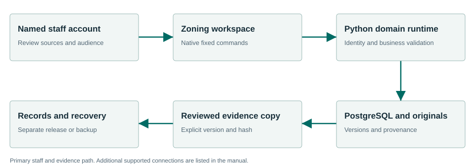

Bring parcel context and cited rules into one review.
Zoning combines local parcel geometry, cited zoning rules and staff review. It retains questions, corrections and snapshots with provenance so downstream staff can identify the precise evidence used.
What the workflow delivers
- Prepare parcel data. Use the complete supported bundle, including jurisdiction, dataset metadata and original hashes. The coordinates must be EPSG:4326. A loose geometry file is not the full source envelope.
- Import and inspect. Check the complete source envelope before selecting Import parcel dataset. That control submits directly; inspect the saved validation/provenance result afterward. Correct a refused source bundle and preserve the evidence. Do not force acceptance by editing SQL.
- Register cited rules. Associate the zone, rule kind/key and value with the relevant public Code section. Inspect overlays and effective context. Leave missing authority visible for planner review.
- Ask a parcel question. Look up the intended parcel and ask the supported question. Read the returned citation, applicability and disclaimer. Do not present an uncertain answer as an official decision.
Connected evidence
Consumes Code authority and permitted Meetings evidence. Supplies permitted snapshots to Records and context to Planning and Permitting.
Know the beta boundary
The accepted path is local GeoJSON/PostGIS. It does not establish every ArcGIS, assessor or CKAN connector. Answers and process explanations are informational and do not issue an entitlement or an official zoning determination.
Where the evidence goes

Consumes Code authority and permitted Meetings evidence. Supplies permitted snapshots to Records and context to Planning and Permitting.
Selected staff workflows passed.
The signed private candidate passed normal first-run and selected synthetic workflows in a fresh Windows Sandbox profile. This is not a claim that every screen, vendor, upgrade or city equipment configuration has been certified.
Read the exact acceptance and limits →Ready to evaluate?
Begin with the manual and the signed candidate linked above. Configure the chosen test site and have its staff review source applicability and run the existing workflows.